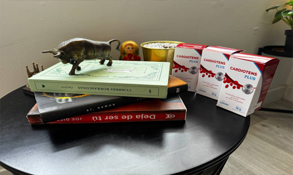
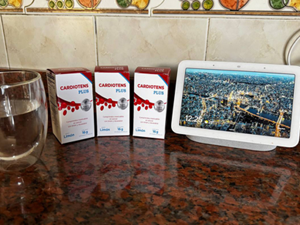
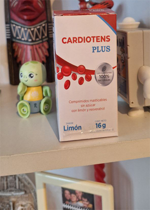
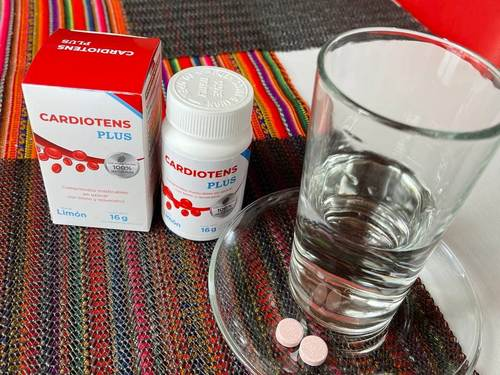

¡Quiero vivir hasta los 150 años! La famosa longeva colombiana ha contado sobre lo que le ayuda a alargar su vida
Virtudes Tomás Navarro, nacida en 1907, es un vivo testimonio de la historia del siglo XX. Con 112 años recién cumplidos, está registrada en el Libro de Récords de Colombia como una de las personas más longevas del país.
Ha vivido más que sus contemporáneos e incluso que muchos de sus hijos.
A sus 112 años, se realiza chequeos médicos regulares con un resultado invariable: salud perfecta.
A pesar de su longevidad, Virtudes rara vez abandona su pueblo y rechaza mudarse a la ciudad. Prefiere la tranquilidad de su hogar.
Durante nuestra visita, compartió con nosotros el principio fundamental que, según ella, es la base de su excepcional vitalidad.
- Virtudes, su vida es extraordinariamente larga. ¿Cuál es su secreto?
- Ya lo he compartido antes con otros. Todo se reduce a mantener mis vasos sanguíneos limpios. Este conocimiento me lo transmitió José Ignacio, un herbolario de confianza en nuestro pueblo. Mucha gente acudía a él en busca de remedios.
Él me explicó su importancia. Mis padres aplicaron sus consejos con mi hermana, que tenía problemas de salud, y se recuperó por completo. Llegó a vivir 95 años. Siempre he inculcado a mi familia que el cuidado de los vasos sanguíneos es el cuidado de la vida misma. Hoy la gente confía demasiado en los compuestos químicos, y por eso a los 60 años muchos ya están enfermos. Mantener los vasos limpios es la clave.
Ese es mi verdadero secreto: la limpieza vascular periódica. Lamentablemente, es un hábito que muy few practican. La medicina moderna a menudo se centra en tratar síntomas con pastillas, pero no aborda la causa subyacente. Si todos se preocuparan por sus vasos, gozarían de mejor salud.
- ¿Cree que una persona con problemas de salud podría mejorar su condición con este método?
- ¡Por supuesto! La sangre nutre cada órgano a través de los vasos. Si estos se obstruyen con desechos, es como una tubería que se tapona; los órganos dejan de recibir nutrientes y se enferman. Riñones, hígado, corazón... incluso el cerebro se ve afectado. Al mejorar el flujo, los órganos pueden recuperarse. Quizás no vivan 112 años como yo, pero sin duda ganarán años de buena salud.
Recuerdo el caso de un hombre de Budapest con serios problemas cardíacos. Los médicos no le daban esperanzas. Su esposa me contactó, le recomendé que limpiara sus vasos. Hoy, más de una década después, sigue vivo y sin hipertensión. Me lo agradecen cada año. Hay muchas historias así.
Siempre he estado dispuesta a compartir esto, aunque a veces siento que mi mensaje no es escuchado. Es una lástima. Limpiar los vasos puede regalarte no solo más años de vida, sino años de vida en buen estado. Al final, ¿de qué sirve vivir mucho si es con enfermedades?
- ¿Cómo limpia los vasos usted misma? ¿Podría compartir la receta con nuestros lectores?
- Antes lo hacía yo misma con hierbas especiales. Recogía las plantas en el momento preciso, las secaba y preparaba la mezcla. Realizaba este proceso una vez cada dos años, que es el intervalo adecuado. Pero ahora, por mi edad, ya no tengo la energía para hacerlo.
Hace unos 15 años, mi hija, que reside en Alemania, comenzó a enviarme un producto moderno. Un mensajero me lo trae a casa. Es muy efectivo, incluso más que mis antiguas hierbas. La edad avanza, y aunque gozo de buena salud, debo adaptarme.
- ¿Cómo se llama este producto?
- La memoria ya no es lo que era, no logro recordar el nombre. Solo recuerdo el color de la caja, pero ya la deseché. Mi hija en Alemania lo solicita para mí. Les daré su contacto, ella podrá decirles. Eso sí, llamar al extranjero puede resultar costoso...
Virtudes buscó en una habitación contigua y regresó con una libreta desgastada llena de números telefónicos escritos a mano.
Contactamos a su hija en Alemania. Nos confirmó que encarga regularmente un producto para la salud vascular para su madre. Aclaró que el producto no es alemán, sino colombiano, debido a las estrictas regulaciones de exportación de suplementos. Nos indicó que se llama Cardiotens.
Para investigar a fondo la veracidad de este método y obtener una opinión médica autorizada, nos pusimos en contacto con el Dr. Sebastián Ugarte, Jefe de la Unidad de Paciente Crítico de la Clínica Indisa, un experto de renombre en el manejo de la salud cardiovascular y condiciones críticas. El Dr. Ugarte accedió a evaluar el caso y el producto.
- Doctor Ugarte, desde su expertise, ¿es beneficiosa la limpieza vascular?
- La evidencia clínica actual apunta consistentemente a que mantener la salud vascular es crucial para la longevidad y el bienestar general. Es una práctica que se está integrando incluso en el manejo complementario de diversas patologías, como enfermedades renales y hepáticas. Un sistema vascular obstruido por colesterol o otros depósitos impacta negativamente en todo el organismo, especialmente en pacientes con condiciones cardiovasculares preexistentes o hipertensión. Para ellos, es fundamental.
- ¿Cómo se realiza la limpieza vascular con este producto Cardiotens?
- Su formulación incluye extracto de espino, conocido por sus propiedades cardiotónicas, hipotensoras y vasodilatadoras, lo que ayuda a calmar el sistema nervioso. Al seguir un tratamiento con este producto, se facilita la eliminación de placas de colesterol adheridas a las paredes vasculares y se promueve la disolución de coágulos. En un 96% de los casos observados, se logra una normalización estable de la presión arterial.
En nuestro centro, hemos monitoreado los resultados de cerca. De aproximadamente 10,000 pacientes tratados con Cardiotens estos son los resultados más significativos:
- Estabilización completa de la presión arterial (mejoría de la hipertensión) - 98% de los pacientes
- Normalización del ritmo cardíaco - 97% de los pacientes
- Desaparición de cefaleas - 99% de los pacientes
- Mejora de la agudeza visual - 74% de los pacientes
- Aumento de la eficacia de terapias para enfermedades crónicas - 92% de los pacientes
- Mejora significativa del bienestar general - 99% de los pacientes
Como puede observarse, los resultados son notablemente positivos y consistentes con los beneficios esperados de una mejora en la salud vascular.
El producto Cardiotens ha sido creado por una fundación médica. Además del extracto de espino contiene más sustancias útiles para el corazón y los vasos sanguíneos, macro y oligoelementos. Enumeraré algunos de ellos
- Extracto de espino
- Extracto de melisa
- Vitamina B6
- Extracto de ajo
- Virtudes mencionó que recibe Cardiotens a domicilio. ¿Está disponible para el público en general?
- Sí, eso puede es cierto. Por lo que se, ahora el producto Cardiotens lo distribuye la fundación médica. Cualquier persona que viva en Colombia puede pedir el producto a un precio mínimo. Para pedir el producto no necesitas ninguna receta, basta con dejar una solicitud en un sitio web. Cardiotens se entrega a todo el país.
Lo recomiendo a cualquiera que quiera limpiar sus vasos. El bienestar y la salud en general mejoran después de este procedimiento.
Lo único que quiero advertir es que este año el Ministerio de Sanidad, Consumo y Bienestar Social no ha asignado los fondos necesarios para continuar el programa de saneamiento de la población, lanzado en 2018. Dicen que no hay dinero. Por lo tanto, ahora solo se está distribuyendo lo que sobró del lote de Cardiotens, el cual compraron el año pasado. Y se termina rápidamente. Por lo tanto, a cualquiera que quiera limpiarse los vasos con este producto, le aconsejaría que lo pidiera lo antes posible, mientras esté disponible.
¡Importante!
¡Debido a la gran cantidad de solicitudes, debemos limitar la duración de la campaña! La etapa actual durará hasta el 16.09.2025 . ¡Hasta el final de la campaña todos los usuarios pueden pedir el producto original "Cardiotens" con un 50% de descuento!
Nuria Gómez
Muchas gracias por el artículo tan interesante. Me he pedido Cardiotens.
hace una hora
Elena Pérez
Es un gran producto. 100% de acuerdo. Antes todo me dolía constantemente. Cuando comencé a limpiarme los vasos con Cardiotens, muchas cosas dejaron de molestarme. ¡Se lo aconsejo a todos!
hace una hora
Teresa Campiña
También me limpié los vasos con este producto. Me lo aconsejó un cardiólogo familiar para la terapia de la hipertensión. Tengo 63 años. La presión se me sube desde 53 años. Últimamente estos saltos de presión se volvieron muy fuertes y frecuentes. Un médico conocido mío (el amigo de la infancia) me habló de este programa y me aconsejó que pidiera el producto hace 3 meses. Ahora ya se me normalizó la presión. Este producto es genial.
hace una hora
Camilo Hernández
También me ayudó a mí. Sufro de hipertensión ya desde hace 7 años. Ya estaba listo para tomar pastillas toda la vida, pero después del curso de Cardiotens la presión se me dejó de aumentar por completo. ¡Lo recomiendo a todos, les ayudará!
hace una hora
Ana María Torres
Muchas gracias a esta señora por contarlo todo.
hace una hora
Arturo Mariscal
Gracias. Es muy interesante. Dejé la solicitud. Me prometieron que en cinco días podré recibir el paquete. Eso espero.
hace una hora
Inma Varona
Me gustó Cardiotens. Me traté con él el verano pasado. ¡La hipertensión se me pasó! Tampoco tengo síntomas y saltos de presión. Me sorprende mucho. Me siento super bien.
hace 27 minutos
Andrés Wagner
Me pedí Cardiotens en el sitio especificado.Tengo hipertensión hereditaria, ya de 3er grado. Siempre he tomado pastillas. La presión me bajaba por debajo de 180/110 muy rara vez. Ahora está completamente normalizada después de tomar un curso de Cardiotens. ¡Es una verdadera salvación!
hace 1 hora
Privacy policy User agreement